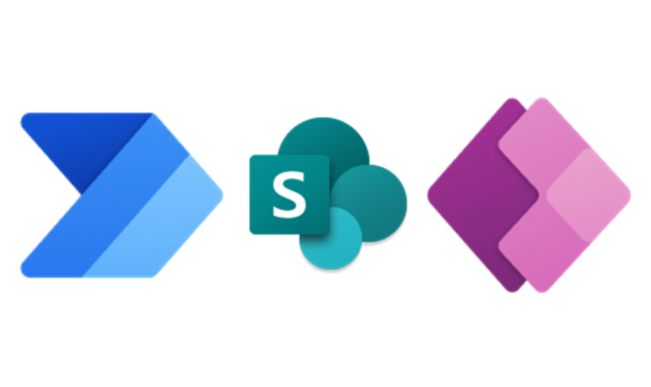

Welcome! I am
Abishai Siambo.
I am specialized in building business operations systems. I work with tools such as Microsoft Excel, PowerBi, PowerApps, PowerAutomate, and Python among others.
Remember, If you can explain what you need, it can be brought to life!

Milling Company Production Planning Model
Comprehensive excel-based model for production planning. Shows long-term inventory forecast based on planned production volumes and forecasted sales.
ExcelPortfolio Website
You're looking at it!... Built to showcase my skill stack ranging from Excel modelling, Power-platform app development, PowerBI report building etc.
Web-DevSales Dashboard
Full scale Sales Reporting Dashboard showing sales revenue, quantities, profit, COGS for a fictional company.
PowerBI
Chicken Meat Quality Control App
This is a PowerPlatform solution for a fictional chicken company's production site quality control operations. It focusses on quality parameter data capturing.
Power-platformFuel Approvals App
Approval app for fuel built using PowerApps, PowerAutomate, and SharePoint Lists
Power-platform
Butchery Operations Tracker
Comprehensive butchery operations tracker built using excel with VBA functionality on data entry. Built for a client that needed an excel based tracker for expenses and sales, complete with a simple dashboard to show key metrics.
ExcelIntercity Bus Logistics Dashboard
This simple one page dashboard models the Zambian intercity bus logistics business. It captures operational metrics for easy monitoring.
PowerBIContact me through any of the following means:
+260972 987621
abishaismb79@gmail.com
Abishai Siambo
Motion Tech Analytics